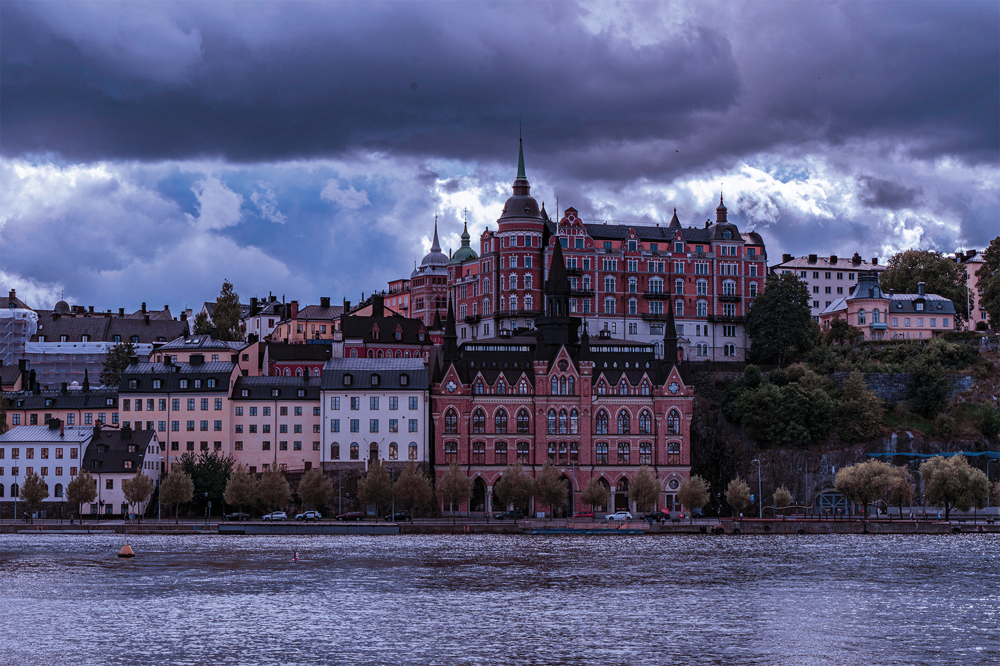
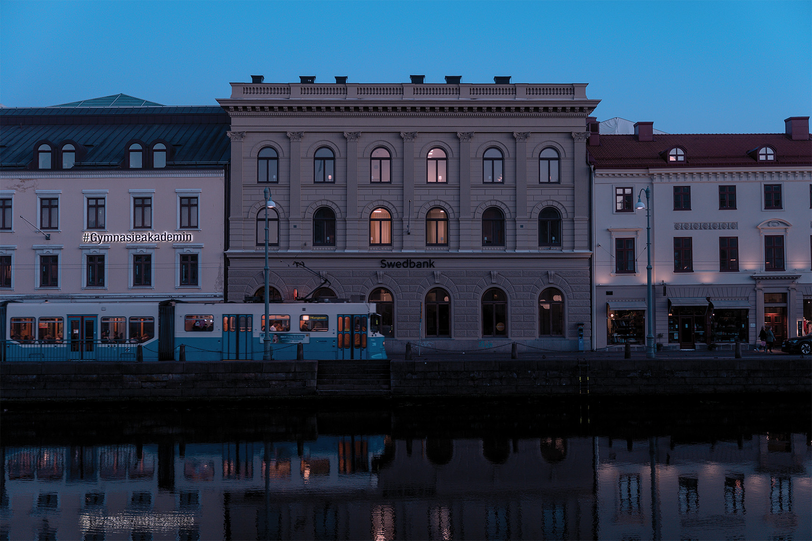
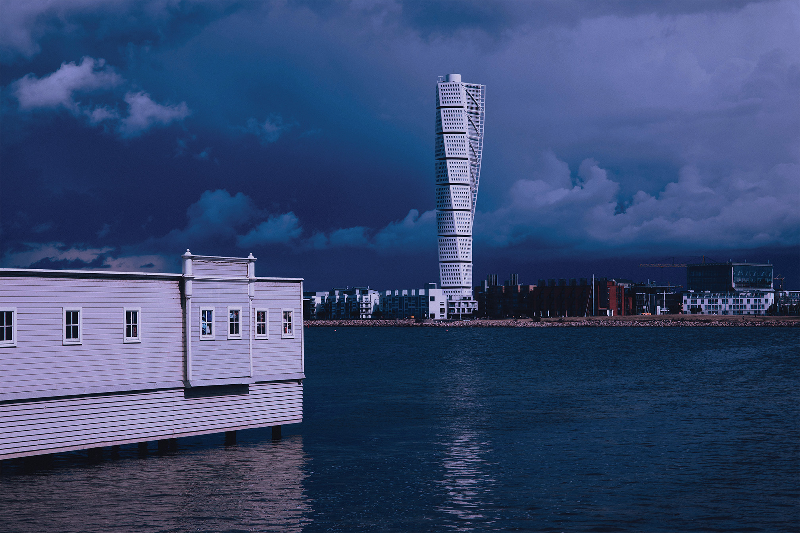

SUECIA
NORDIK

Suecia
En Suecia, la relación entre ciudad y naturaleza define una forma de vida donde el equilibrio es protagonista. El agua, siempre presente, estructura el paisaje urbano y acompaña una arquitectura que combina tradición y modernidad con naturalidad. Las calles reflejan una cultura del diseño reconocida a nivel mundial, en la que cada objeto y espacio responde a una intención clara: ser funcional, accesible y estéticamente cuidado. A esto se suma una fuerte conciencia ambiental que se traduce en ciudades limpias, organizadas y pensadas para el bienestar cotidiano.
Más allá de lo visual, Suecia ofrece una experiencia marcada por el ritmo pausado y la conexión con el entorno. Parques, bosques y espacios abiertos forman parte de la vida diaria, invitando a recorrerlos en cualquier época del año. La luz, cambiante y protagonista, transforma completamente los paisajes según la estación, creando atmósferas únicas que van desde los días interminables del verano hasta los inviernos cubiertos de nieve. Esta diversidad convierte cada visita en una experiencia distinta, siempre ligada a la contemplación y al detalle.
La identidad sueca también se expresa en una profunda valoración de la sencillez y la funcionalidad. En sus ciudades y pueblos, el diseño no busca imponerse, sino integrarse de manera natural con el entorno y facilitar la vida cotidiana. Interiores luminosos, materiales como la madera y la piedra, y una estética sobria pero acogedora reflejan una filosofía en la que el confort y la practicidad son fundamentales. Esta forma de entender los espacios ha influido en la arquitectura, el mobiliario y la cultura visual del país, convirtiendo a Suecia en un referente internacional del diseño contemporáneo.
Al recorrer Suecia, el visitante descubre un territorio donde la modernidad convive con una fuerte conexión con las tradiciones y el paisaje. Desde costas salpicadas de islas hasta extensos bosques y lagos cristalinos, el país ofrece escenarios de gran serenidad y belleza. La vida cotidiana transcurre con un ritmo tranquilo, en el que el respeto por la naturaleza, la organización del espacio y la búsqueda del bienestar generan una atmósfera distintiva. Más que un destino, Suecia representa una manera de habitar el mundo en la que el equilibrio entre innovación, cultura y entorno natural se convierte en parte esencial de la experiencia.
Estocolmo

En Estocolmo, la ciudad se despliega sobre un entramado de islas conectadas por puentes, donde el agua no solo define el paisaje, sino también la forma en que se vive y se recorre el entorno. El contraste entre historia y modernidad se hace evidente en lugares como Gamla Stan, con sus calles estrechas y edificios coloridos, y espacios más contemporáneos que reflejan la identidad innovadora de la ciudad. Entre ellos destaca el Ayuntamiento de Estocolmo, reconocido por su arquitectura y su relación con el agua, así como el Palacio Real de Estocolmo, que evidencia la herencia histórica del país.
La oferta cultural se extiende a través de museos y espacios únicos como el Museo Vasa, en el que alberga una embarcación histórica conservada con gran detalle, o Skansen, donde es posible experimentar tradiciones y formas de vida del pasado en un entorno al aire libre. Esta diversidad convierte a Estocolmo en un lugar donde la historia no solo se observa, sino que se experimenta de manera directa.
Más allá de sus puntos emblemáticos, la ciudad destaca por su equilibrio entre lo urbano y lo natural. Parques, paseos junto al agua y amplios espacios abiertos forman parte esencial de la vida cotidiana, creando una atmósfera tranquila y accesible. Esta integración hace de Estocolmo un destino que invita a ser explorado con calma, donde cada recorrido revela nuevas perspectivas y detalles en cada esquina.
Gotemburgo
En Gotemburgo, la identidad marítima se mezcla con una escena cultural activa y en constante evolución. Su ubicación costera ha definido una ciudad donde canales, puertos y antiguos espacios industriales conviven con áreas renovadas, creando un entorno dinámico y diverso. Barrios como Haga conservan un carácter tradicional con calles estrechas y arquitectura acogedora, mientras que Liseberg introduce una dimensión más vibrante y contemporánea.
La ciudad también destaca por su oferta cultural y sus espacios abiertos. El Museo de Arte de Gotemburgo reúne una colección significativa que refuerza la identidad artística local, y el Slottsskogen funciona como un pulmón verde que conecta la vida urbana con la naturaleza. Esta combinación de elementos permite vivir Gotemburgo desde múltiples ángulos, integrando historia, cultura y paisaje en un mismo recorrido.
Más allá de sus atractivos específicos, Gotemburgo transmite una atmósfera relajada y accesible que la distingue dentro de Suecia. La cercanía al mar, el ritmo tranquilo de sus calles y la constante presencia de espacios públicos bien integrados generan una experiencia urbana equilibrada y acogedora. Entre arquitectura histórica, innovación cultural y paisajes costeros, la ciudad ofrece una visión auténtica del estilo de vida escandinavo, donde la tradición portuaria y la creatividad contemporánea se encuentran de manera natural.

Malmo

En Malmö, la cercanía con Europa continental se refleja en una identidad abierta, diversa y en constante transformación. Su ubicación estratégica al sur de Suecia ha convertido a la ciudad en un importante punto de conexión cultural y económica, donde distintas influencias conviven en un entorno dinámico y contemporáneo. El agua, siempre presente, estructura el paisaje urbano y acompaña una arquitectura que combina edificios históricos con propuestas de diseño innovadoras.
En el centro de la ciudad, Lilla Torg conserva un carácter tradicional con fachadas antiguas, cafés y una atmósfera acogedora que invita a recorrer sus espacios con tranquilidad. En contraste, el Turning Torso se eleva como un ícono de la arquitectura contemporánea y redefine el perfil urbano con su forma escultórica y su enfoque vanguardista. Esta convivencia entre patrimonio e innovación otorga a Malmö una personalidad visual única y en constante evolución.
La ciudad también destaca por la calidad de sus espacios públicos y su estrecha relación con el entorno natural. Parques, paseos costeros y zonas verdes se integran de manera armónica con la vida cotidiana, ofreciendo lugares para el descanso y la contemplación. Con un ambiente relajado, una fuerte apuesta por la sostenibilidad y una visión cosmopolita, Malmö representa una de las expresiones más modernas y accesibles del estilo de vida escandinavo.
Descargar revista en PDF